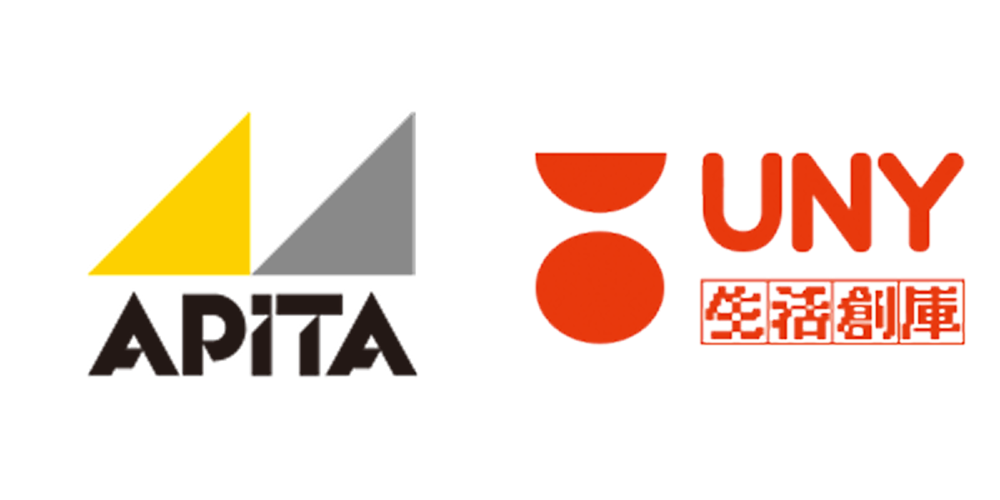

處理中，請稍候...
Copyright © 2026 Kin Tang

預設平面圖清單
其他平面圖上傳:
圖紙尺寸:
A0
A1
A2
A3
A4
比例 1:
50
75
100
150
200
250
300
350
400
500
確認比例
手動比例校對
平移
測量面積平方呎
測量長度
撤銷 (Ctrl+Z)
清除
儲存 JPEG
提示：電腦按 Shift 鎖定角度；iPad 單指繪圖，雙指縮放。
結果:
0